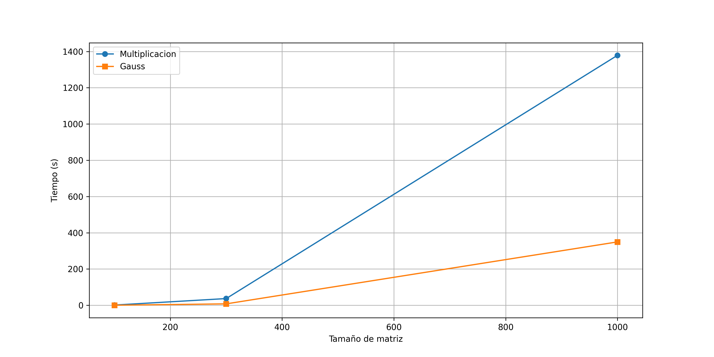
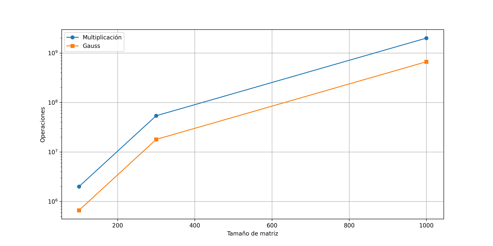

El análisis experimental de algoritmos en el manejo de matrices es fundamental en la ciencia de datos, la ingeniería y la computación científica. Las matrices son estructuras de datos esenciales utilizadas en numerosos campos como el modelado de sistemas físicos, el procesamiento de imágenes, la inteligencia artificial y la computación gráfica. En este trabajo, se analizan dos algoritmos ampliamente utilizados en operaciones matriciales: la multiplicación de matrices y la eliminación gaussiana (incluyendo Gauss-Jordan). Estos algoritmos son cruciales para la solución de sistemas de ecuaciones lineales, la optimización de cálculos y el procesamiento de grandes volúmenes de datos en entornos computacionales avanzados (Golub y Loan 2013a).
La multiplicación de matrices es una operación matemática fundamental con aplicaciones en diversas áreas, desde la estadística multivariada hasta la simulación numérica. Su eficiencia es clave, ya que los cálculos matriciales pueden volverse computacionalmente costosos a medida que aumenta el tamaño de las matrices involucradas (Strang 2016). Por su parte, la eliminación de Gauss-Jordan es un método empleado para resolver sistemas de ecuaciones lineales y encontrar la inversa de matrices, lo que lo hace útil en cálculos de dinámica estructural, redes eléctricas y análisis de datos en ingeniería (Trefethen y III 1997).
Uno de los principales desafíos en el uso de estos algoritmos es su complejidad computacional, ya que la cantidad de operaciones requeridas crece significativamente con el tamaño de las matrices. Para evaluar el rendimiento de estos algoritmos, se debe considerar tanto el tiempo de ejecución como el número de operaciones realizadas, incluyendo sumas y multiplicaciones escalares. La eficiencia de estos cálculos no solo depende del algoritmo en sí, sino también del acceso a los datos en memoria. El acceso secuencial a elementos contiguos mejora significativamente la velocidad de ejecución al aprovechar la localidad espacial en caché del procesador, optimizando el uso de los niveles de memoria (Patterson y Hennessy 2020).
Además, este trabajo analiza las implicaciones de utilizar matrices dispersas en lugar de matrices densas. En problemas reales, muchas matrices contienen una gran cantidad de ceros, lo que motiva el uso de representaciones optimizadas que almacenan solo los valores no nulos. Esto puede reducir significativamente el consumo de memoria y mejorar la eficiencia computacional. Sin embargo, el uso de matrices dispersas introduce ciertos desafíos, como una mayor complejidad en el acceso a elementos individuales y posibles aumentos en el tiempo de ejecución debido a estructuras de datos más elaboradas (Davis 2006).
El objetivo principal de este estudio es evaluar el rendimiento de la multiplicación de matrices y la eliminación de Gauss-Jordan en términos de tiempo de ejecución y cantidad de operaciones requeridas, utilizando matrices aleatorias de tamaños n=100,300,1000. Se realizarán comparaciones entre estos algoritmos y se analizará el impacto del acceso a elementos contiguos en memoria, así como los costos y beneficios de utilizar matrices dispersas en diferentes escenarios computacionales (Higham 2002).
En los próximos apartados, se presentarán los fundamentos teóricos de estos algoritmos, la metodología empleada para su análisis, los experimentos realizados y los resultados obtenidos, seguidos de una discusión sobre su eficiencia en la práctica y posibles optimizaciones futuras.
5 Metodología
Las operaciones analizadas en este reporte son:
Multiplicación de matrices: Se implementa un algoritmo de multiplicación de matrices basado en la definición matemática tradicional.
Eliminación de Gauss-Jordan: Algoritmo utilizado para resolver sistemas de ecuaciones y encontrar inversas de matrices.
Los algoritmos se evaluarán sobre matrices de tamaño n x n con valores aleatorios para (n = 100, 300, 1000). Se medirán separadamente el tiempo de ejecución y el número de operaciones realizadas.
6 Código utilizado
Código
import numpy as npimport timeimport pandas as pdimport matplotlib.pyplot as pltdef multiplicar_matrices(A, B): filas_A, columnas_A = A.shape filas_B, columnas_B = B.shapeif columnas_A != filas_B:raiseValueError("Las matrices no se pueden multiplicar") C = np.zeros((filas_A, columnas_B)) operaciones =0for i inrange(filas_A):for j inrange(columnas_B):for k inrange(filas_B): C[i, j] += A[i, k] * B[k, j] operaciones +=2return C, operacionesdef eliminacion_gaussiana(A): n = A.shape[0] U = A.copy() operaciones =0for i inrange(n):if U[i, i] ==0:for j inrange(i+1, n):if U[j, i] !=0: U[[i, j]] = U[[j, i]]break pivote = U[i, i]if pivote ==0:continuefor j inrange(i+1, n):if U[j, i] !=0: factor = U[j, i] // pivote for k inrange(i, n): U[j, k] -= factor * U[i, k] operaciones +=2return U, operacionesdef evaluar_algoritmos(): tamanos = [100, 300, 1000] resultados = []for n in tamanos: A = np.random.randint(-10, 10, size=(n, n)) B = np.random.randint(-10, 10, size=(n, n)) inicio = time.time() _, ops_mult = multiplicar_matrices(A, B) tiempo_mult = time.time() - inicio inicio = time.time() _, ops_gauss = eliminacion_gaussiana(A) tiempo_gauss = time.time() - inicio resultados.append((n, tiempo_mult, ops_mult, tiempo_gauss, ops_gauss))return resultadosresultados = evaluar_algoritmos()df = pd.DataFrame(resultados, columns=["Tamano", "Tiempo Multiplicacion","Operaciones Multiplicacion","Tiempo Gauss", "Operaciones Gauss"])latex_table = df.to_latex()latex_table ="""\\begin{table}[ht]\\caption{Resultados de tiempos de ejecucion y operaciones}\\label{tab:results}\\centering"""+ latex_table +"""\\end{table}"""withopen('tabla_resultados.tex', 'w') as f: # Guardar en un archivo .tex f.write(latex_table)plt.figure(figsize=(12, 6))plt.plot(df["Tamano"], df["Tiempo Multiplicacion"], 'o-', label="Multiplicacion")plt.plot(df["Tamano"], df["Tiempo Gauss"], 's-', label="Gauss")plt.xlabel("Tamaño de matriz")plt.ylabel("Tiempo (s)")plt.legend()plt.grid(True)plt.savefig("comparacion_algoritmos_tiempo.png")plt.figure(figsize=(12, 6))plt.plot(df["Tamano"], df["Operaciones Multiplicacion"], 'o-',label="Multiplicación")plt.plot(df["Tamano"], df["Operaciones Gauss"], 's-', label="Gauss")plt.xlabel("Tamaño de matriz")plt.ylabel("Operaciones")plt.yscale('log')plt.legend()plt.grid(True)plt.savefig("comparacion_algoritmos_ops.png")
7 Analisis de resultados
En la tabla \(\ref{tab:results}\) se puede apreciar como conforme el tamaño de la matriz aumenta el tiempo de ejecución y las operaciones van creciendo exponencialmente.
En la siguiente figura se muestra la comparación del tiempo de ejecución entre la eliminación gaussiana y la multiplicación de matrices. El tiempo de ejecución de la multiplicación de matrices aumenta exponencialmente con una matriz de tamaño n=1000. Este ultimo tiempo de ejecución fue de alrededor de 15 minutos para la matriz de tamaño n=1000.

Tiempos de Ejecución de Algoritmos
En la siguiente figura se muestra la comparación del Número de operaciones entre la eliminación gaussiana y la multiplicación de matrices. La multiplicación de matrices tiene un numero mayor de operaciones, aunque la tendencia de operaciones es similar entre los dos algoritmos.

Número de operaciones de Algoritmos
8 Conclusión
Los experimentos realizados demuestran que la eficiencia de los algoritmos para operar con matrices depende tanto de la operación específica como del tamaño de las matrices involucradas. En el caso de la multiplicación de matrices y la eliminación de Gauss-Jordan, se observó un comportamiento diferenciado al variar el tamaño de la matriz.
Para tamaños pequeños (n=100), la eliminación de Gauss-Jordan presentó un tiempo de ejecución menor y un número de operaciones inferior en comparación con la multiplicación de matrices. Sin embargo, al aumentar n a 1000, ambos algoritmos mostraron un incremento considerable en tiempo y operaciones, aunque la eliminación de Gauss-Jordan se mantuvo más eficiente. Esto se debe a que su estructura evita las redundancias de cálculo que ocurren en la multiplicación de matrices estándar, reduciendo la cantidad de multiplicaciones y sumas necesarias (Golub y Loan 2013b).
En términos de complejidad computacional, la multiplicación de matrices tiene una complejidad teórica de \(O(n^3)\) cuando se implementa en su forma más básica, lo que la hace poco eficiente para tamaños grandes. Alternativamente, existen métodos más avanzados como la multiplicación de Strassen \(O(n^2.81)\) o algoritmos basados en el uso de GPUs que pueden reducir significativamente el tiempo de ejecución (Cormen et al. 2009). Por otro lado, la eliminación de Gauss-Jordan sigue una estructura que también es \(O(n^3)\), pero en la práctica suele ser más eficiente que la multiplicación directa de matrices cuando se trata de resolver sistemas de ecuaciones lineales en una única matriz aumentada.
8.1 Impacto del acceso contiguo en memoria
El acceso a elementos contiguos en una matriz mejora el uso de la memoria caché y reduce la latencia de acceso a datos, optimizando el rendimiento del algoritmo. En arquitecturas modernas, el tiempo de acceso a memoria es un factor crítico en la eficiencia de los cálculos matriciales. Cuando un algoritmo accede a datos de manera secuencial y alineada con la memoria caché, el procesador puede predecir y optimizar las lecturas, reduciendo los tiempos de espera y acelerando la ejecución (Patterson y Hennessy 2020).
En el caso de la multiplicación de matrices, el acceso a los elementos de forma no contigua en la memoria puede generar una penalización de rendimiento debido a los cache misses, especialmente en implementaciones ingenuas. Técnicas como el loop tiling o el uso de column-major ordering en ciertos lenguajes pueden ayudar a optimizar este comportamiento, permitiendo que los algoritmos se beneficien del uso eficiente de la caché (Strang 2016).
8.2 Consideraciones sobre matrices dispersas
El uso de matrices dispersas podría reducir significativamente el almacenamiento y mejorar la eficiencia computacional en ciertos casos. Sin embargo, esto introduce desafíos como:
Mayor complejidad de implementación: Se requiere una representación especial para matrices dispersas, como el formato Compressed Sparse Row (CSR) o Compressed Sparse Column (CSC), lo que puede complicar su manipulación en comparación con matrices densas (Davis 2006).
Acceso más costoso a elementos individuales: Dependiendo de la estructura de almacenamiento, el acceso a elementos en una matriz dispersa puede ser más lento que en una matriz densa, ya que se requiere recorrer índices y punteros en lugar de realizar un acceso directo en memoria. Esto afecta el rendimiento en aplicaciones que requieren accesos aleatorios frecuentes (Higham 2002).
Incremento en la densidad debido a operaciones: Algunas transformaciones, como la eliminación gaussiana, pueden llenar la matriz con valores no nulos que antes eran ceros, reduciendo la eficiencia esperada. Este fenómeno, conocido como fill-in, puede aumentar significativamente la memoria utilizada y el tiempo de cómputo, especialmente en problemas de álgebra lineal aplicada (Trefethen y III 1997).
A pesar de estos desafíos, el uso de matrices dispersas es clave en aplicaciones como la solución de sistemas de ecuaciones diferenciales parciales, simulaciones físicas y análisis de redes, donde la estructura de los datos hace que el almacenamiento en forma dispersa sea más eficiente que en una matriz densa (Saad 2003).
La elección del algoritmo adecuado y la representación de la matriz dependen de la naturaleza del problema y los recursos computacionales disponibles. Para tamaños de matrices moderados, la eliminación de Gauss-Jordan es más eficiente que la multiplicación de matrices tradicional, mientras que para tamaños grandes es crucial emplear optimizaciones como métodos iterativos o paralelización en hardware especializado.
El impacto del acceso contiguo en memoria es significativo y puede mejorar el rendimiento de los algoritmos si se optimiza adecuadamente el acceso a datos en caché. En escenarios donde se emplean matrices dispersas, se debe evaluar el compromiso entre el ahorro de memoria y el costo adicional en operaciones de acceso y manipulación de los datos.
En aplicaciones del mundo real, la elección entre matrices densas y dispersas, así como entre distintos métodos de factorización, depende en gran medida del problema que se está resolviendo. La investigación futura podría enfocarse en el uso de hardware especializado, como GPUs o arquitecturas de cómputo de alto rendimiento, para mejorar la eficiencia de estos cálculos en escenarios de gran escala (Patterson y Hennessy 2020).
8.3 Lista de Cambios}
Sin modificaciones
9 Bibliografía
Cormen, Thomas H., Charles E. Leiserson, Ronald L. Rivest, y Clifford Stein. 2009. Introduction to Algorithms, Third Edition. MIT Press.
Davis, Timothy A. 2006. Direct Methods for Sparse Linear Systems. SIAM.
Golub, Gene Howard, y Charles F. Van Loan. 2013a. Matrix Computations. JHU Press.
———. 2013b. Matrix Computations. JHU Press.
Higham, Nicholas J. 2002. Accuracy and Stability of Numerical Algorithms: Second Edition. SIAM.
Patterson, David A., y John L. Hennessy. 2020. Computer Organization and Design MIPS Edition: The Hardware/Software Interface. Morgan Kaufmann.
Saad, Y. 2003. Iterative Methods for Sparse Linear Systems. Society for Industrial; Applied Mathematics.
Strang, Gilbert. 2016. Introduction to Linear Algebra. Wellesley.
Trefethen, Lloyd N., y David Bau III. 1997. Numerical Linear Algebra. Philadelphia, Pa.
Ejecutar el código
---title: "2A Reporte escrito. Experimentos y análisis de estructuras de datos"author: "José Francisco Cázares Marroquín"date: "02/12/2025"format: html: toc: true lang: es-MX number-sections: true code-fold: true theme: cosmo css: styles.cssexecute: eval: false echo: true warning: falsebibliography: references2.bib---# IntroducciónEl análisis experimental de algoritmos en el manejo de matrices es fundamental en la ciencia de datos, la ingeniería y la computación científica. Las matrices son estructuras de datos esenciales utilizadas en numerosos campos como el modelado de sistemas físicos, el procesamiento de imágenes, la inteligencia artificial y la computación gráfica. En este trabajo, se analizan dos algoritmos ampliamente utilizados en operaciones matriciales: la multiplicación de matrices y la eliminación gaussiana (incluyendo Gauss-Jordan). Estos algoritmos son cruciales para la solución de sistemas de ecuaciones lineales, la optimización de cálculos y el procesamiento de grandes volúmenes de datos en entornos computacionales avanzados [@golub2013].La multiplicación de matrices es una operación matemática fundamental con aplicaciones en diversas áreas, desde la estadística multivariada hasta la simulación numérica. Su eficiencia es clave, ya que los cálculos matriciales pueden volverse computacionalmente costosos a medida que aumenta el tamaño de las matrices involucradas [@strang2016]. Por su parte, la eliminación de Gauss-Jordan es un método empleado para resolver sistemas de ecuaciones lineales y encontrar la inversa de matrices, lo que lo hace útil en cálculos de dinámica estructural, redes eléctricas y análisis de datos en ingeniería [@trefethen1997].Uno de los principales desafíos en el uso de estos algoritmos es su complejidad computacional, ya que la cantidad de operaciones requeridas crece significativamente con el tamaño de las matrices. Para evaluar el rendimiento de estos algoritmos, se debe considerar tanto el tiempo de ejecución como el número de operaciones realizadas, incluyendo sumas y multiplicaciones escalares. La eficiencia de estos cálculos no solo depende del algoritmo en sí, sino también del acceso a los datos en memoria. El acceso secuencial a elementos contiguos mejora significativamente la velocidad de ejecución al aprovechar la localidad espacial en caché del procesador, optimizando el uso de los niveles de memoria [@patterson2020].Además, este trabajo analiza las implicaciones de utilizar matrices dispersas en lugar de matrices densas. En problemas reales, muchas matrices contienen una gran cantidad de ceros, lo que motiva el uso de representaciones optimizadas que almacenan solo los valores no nulos. Esto puede reducir significativamente el consumo de memoria y mejorar la eficiencia computacional. Sin embargo, el uso de matrices dispersas introduce ciertos desafíos, como una mayor complejidad en el acceso a elementos individuales y posibles aumentos en el tiempo de ejecución debido a estructuras de datos más elaboradas [@davis2006].El objetivo principal de este estudio es evaluar el rendimiento de la multiplicación de matrices y la eliminación de Gauss-Jordan en términos de tiempo de ejecución y cantidad de operaciones requeridas, utilizando matrices aleatorias de tamaños n=100,300,1000. Se realizarán comparaciones entre estos algoritmos y se analizará el impacto del acceso a elementos contiguos en memoria, así como los costos y beneficios de utilizar matrices dispersas en diferentes escenarios computacionales [@higham2002].En los próximos apartados, se presentarán los fundamentos teóricos de estos algoritmos, la metodología empleada para su análisis, los experimentos realizados y los resultados obtenidos, seguidos de una discusión sobre su eficiencia en la práctica y posibles optimizaciones futuras.# MetodologíaLas operaciones analizadas en este reporte son:1. **Multiplicación de matrices**: Se implementa un algoritmo de multiplicación de matrices basado en la definición matemática tradicional.2. **Eliminación de Gauss-Jordan**: Algoritmo utilizado para resolver sistemas de ecuaciones y encontrar inversas de matrices.Los algoritmos se evaluarán sobre matrices de tamaño n x n con valores aleatorios para (n = 100, 300, 1000). Se medirán separadamente el tiempo de ejecución y el número de operaciones realizadas.# Código utilizado```{python}import numpy as npimport timeimport pandas as pdimport matplotlib.pyplot as pltdef multiplicar_matrices(A, B): filas_A, columnas_A = A.shape filas_B, columnas_B = B.shapeif columnas_A != filas_B:raiseValueError("Las matrices no se pueden multiplicar") C = np.zeros((filas_A, columnas_B)) operaciones =0for i inrange(filas_A):for j inrange(columnas_B):for k inrange(filas_B): C[i, j] += A[i, k] * B[k, j] operaciones +=2return C, operacionesdef eliminacion_gaussiana(A): n = A.shape[0] U = A.copy() operaciones =0for i inrange(n):if U[i, i] ==0:for j inrange(i+1, n):if U[j, i] !=0: U[[i, j]] = U[[j, i]]break pivote = U[i, i]if pivote ==0:continuefor j inrange(i+1, n):if U[j, i] !=0: factor = U[j, i] // pivote for k inrange(i, n): U[j, k] -= factor * U[i, k] operaciones +=2return U, operacionesdef evaluar_algoritmos(): tamanos = [100, 300, 1000] resultados = []for n in tamanos: A = np.random.randint(-10, 10, size=(n, n)) B = np.random.randint(-10, 10, size=(n, n)) inicio = time.time() _, ops_mult = multiplicar_matrices(A, B) tiempo_mult = time.time() - inicio inicio = time.time() _, ops_gauss = eliminacion_gaussiana(A) tiempo_gauss = time.time() - inicio resultados.append((n, tiempo_mult, ops_mult, tiempo_gauss, ops_gauss))return resultadosresultados = evaluar_algoritmos()df = pd.DataFrame(resultados, columns=["Tamano", "Tiempo Multiplicacion","Operaciones Multiplicacion","Tiempo Gauss", "Operaciones Gauss"])latex_table = df.to_latex()latex_table ="""\\begin{table}[ht]\\caption{Resultados de tiempos de ejecucion y operaciones}\\label{tab:results}\\centering"""+ latex_table +"""\\end{table}"""withopen('tabla_resultados.tex', 'w') as f: # Guardar en un archivo .tex f.write(latex_table)plt.figure(figsize=(12, 6))plt.plot(df["Tamano"], df["Tiempo Multiplicacion"], 'o-', label="Multiplicacion")plt.plot(df["Tamano"], df["Tiempo Gauss"], 's-', label="Gauss")plt.xlabel("Tamaño de matriz")plt.ylabel("Tiempo (s)")plt.legend()plt.grid(True)plt.savefig("comparacion_algoritmos_tiempo.png")plt.figure(figsize=(12, 6))plt.plot(df["Tamano"], df["Operaciones Multiplicacion"], 'o-',label="Multiplicación")plt.plot(df["Tamano"], df["Operaciones Gauss"], 's-', label="Gauss")plt.xlabel("Tamaño de matriz")plt.ylabel("Operaciones")plt.yscale('log')plt.legend()plt.grid(True)plt.savefig("comparacion_algoritmos_ops.png")```# Analisis de resultadosEn la tabla \ref{tab:results} se puede apreciar como conforme el tamaño de la matriz aumenta el tiempo de ejecución y las operaciones van creciendo exponencialmente.\input{tabla_resultados.tex}En la siguiente figura se muestra la comparación del tiempo de ejecución entre la eliminación gaussiana y la multiplicación de matrices. El tiempo de ejecución de la multiplicación de matrices aumenta exponencialmente con una matriz de tamaño n=1000. Este ultimo tiempo de ejecución fue de alrededor de 15 minutos para la matriz de tamaño n=1000.{fig-align="center"}En la siguiente figura se muestra la comparación del Número de operaciones entre la eliminación gaussiana y la multiplicación de matrices. La multiplicación de matrices tiene un numero mayor de operaciones, aunque la tendencia de operaciones es similar entre los dos algoritmos.{fig-align="center"}# ConclusiónLos experimentos realizados demuestran que la eficiencia de los algoritmos para operar con matrices depende tanto de la operación específica como del tamaño de las matrices involucradas. En el caso de la multiplicación de matrices y la eliminación de Gauss-Jordan, se observó un comportamiento diferenciado al variar el tamaño de la matriz.Para tamaños pequeños (n=100), la eliminación de Gauss-Jordan presentó un tiempo de ejecución menor y un número de operaciones inferior en comparación con la multiplicación de matrices. Sin embargo, al aumentar n a 1000, ambos algoritmos mostraron un incremento considerable en tiempo y operaciones, aunque la eliminación de Gauss-Jordan se mantuvo más eficiente. Esto se debe a que su estructura evita las redundancias de cálculo que ocurren en la multiplicación de matrices estándar, reduciendo la cantidad de multiplicaciones y sumas necesarias [@golub2013a].En términos de complejidad computacional, la multiplicación de matrices tiene una complejidad teórica de $O(n^3)$ cuando se implementa en su forma más básica, lo que la hace poco eficiente para tamaños grandes. Alternativamente, existen métodos más avanzados como la multiplicación de Strassen $O(n^2.81)$ o algoritmos basados en el uso de GPUs que pueden reducir significativamente el tiempo de ejecución [@cormen2009]. Por otro lado, la eliminación de Gauss-Jordan sigue una estructura que también es $O(n^3)$, pero en la práctica suele ser más eficiente que la multiplicación directa de matrices cuando se trata de resolver sistemas de ecuaciones lineales en una única matriz aumentada.## Impacto del acceso contiguo en memoriaEl acceso a elementos contiguos en una matriz mejora el uso de la memoria caché y reduce la latencia de acceso a datos, optimizando el rendimiento del algoritmo. En arquitecturas modernas, el tiempo de acceso a memoria es un factor crítico en la eficiencia de los cálculos matriciales. Cuando un algoritmo accede a datos de manera secuencial y alineada con la memoria caché, el procesador puede predecir y optimizar las lecturas, reduciendo los tiempos de espera y acelerando la ejecución [@patterson2020].En el caso de la multiplicación de matrices, el acceso a los elementos de forma no contigua en la memoria puede generar una penalización de rendimiento debido a los *cache misses*, especialmente en implementaciones ingenuas. Técnicas como el *loop tiling* o el uso de *column-major ordering* en ciertos lenguajes pueden ayudar a optimizar este comportamiento, permitiendo que los algoritmos se beneficien del uso eficiente de la caché [@strang2016].## Consideraciones sobre matrices dispersasEl uso de matrices dispersas podría reducir significativamente el almacenamiento y mejorar la eficiencia computacional en ciertos casos. Sin embargo, esto introduce desafíos como:- **Mayor complejidad de implementación**: Se requiere una representación especial para matrices dispersas, como el formato Compressed Sparse Row (CSR) o Compressed Sparse Column (CSC), lo que puede complicar su manipulación en comparación con matrices densas [@davis2006].<!-- -->- **Acceso más costoso a elementos individuales**: Dependiendo de la estructura de almacenamiento, el acceso a elementos en una matriz dispersa puede ser más lento que en una matriz densa, ya que se requiere recorrer índices y punteros en lugar de realizar un acceso directo en memoria. Esto afecta el rendimiento en aplicaciones que requieren accesos aleatorios frecuentes [@higham2002].- **Incremento en la densidad debido a operaciones**: Algunas transformaciones, como la eliminación gaussiana, pueden llenar la matriz con valores no nulos que antes eran ceros, reduciendo la eficiencia esperada. Este fenómeno, conocido como *fill-in*, puede aumentar significativamente la memoria utilizada y el tiempo de cómputo, especialmente en problemas de álgebra lineal aplicada [@trefethen1997].A pesar de estos desafíos, el uso de matrices dispersas es clave en aplicaciones como la solución de sistemas de ecuaciones diferenciales parciales, simulaciones físicas y análisis de redes, donde la estructura de los datos hace que el almacenamiento en forma dispersa sea más eficiente que en una matriz densa [@saad2003].La elección del algoritmo adecuado y la representación de la matriz dependen de la naturaleza del problema y los recursos computacionales disponibles. Para tamaños de matrices moderados, la eliminación de Gauss-Jordan es más eficiente que la multiplicación de matrices tradicional, mientras que para tamaños grandes es crucial emplear optimizaciones como métodos iterativos o paralelización en hardware especializado.El impacto del acceso contiguo en memoria es significativo y puede mejorar el rendimiento de los algoritmos si se optimiza adecuadamente el acceso a datos en caché. En escenarios donde se emplean matrices dispersas, se debe evaluar el compromiso entre el ahorro de memoria y el costo adicional en operaciones de acceso y manipulación de los datos.En aplicaciones del mundo real, la elección entre matrices densas y dispersas, así como entre distintos métodos de factorización, depende en gran medida del problema que se está resolviendo. La investigación futura podría enfocarse en el uso de hardware especializado, como GPUs o arquitecturas de cómputo de alto rendimiento, para mejorar la eficiencia de estos cálculos en escenarios de gran escala [@patterson2020].## Lista de Cambios}- Sin modificaciones# Bibliografía